第零课：课程环境搭建（Windows）
课前完成清单
| 工具 | 要求 | 优先级 |
|---|---|---|
| Python + uv | 完成 uv 安装并执行过 uv --version |
必做 |
| PyCharm | 完成安装，可正常打开项目 | 必做 |
| Git | 完成安装并执行过 git --version |
必做 |
| nvm | 可先跳过，Django 最后一节课前补齐 | 可选 |
课程内容
1. Python 环境（必做）
本课程统一使用 uv 管理 Python 和项目环境，减少版本冲突并降低课上网络波动影响。
1.1 安装 uv
PowerShell 一键安装（推荐）
powershell -ExecutionPolicy ByPass -c "irm https://astral.sh/uv/install.ps1 | iex"安装后验证
uv --version1.2 常见报错处理
如果出现 uv.exe 正由另一进程使用 的报错，先结束进程再重试安装。
终止 uv 进程
taskkill /F /IM uv.exe1.3 初始化项目
- 新建一个空文件夹。
- 在该目录打开终端，执行以下命令。
初始化项目
uv init2. IDE（PyCharm）
- 当前阶段使用 PyCharm 社区版即可。
- 进入 Django 阶段后，建议升级专业版获得完整 Web 开发支持。
2.1 升级专业版方式
- 使用学生证或录取通知书到 JetBrains 官方申请学生认证。
- 使用学生邮箱申请学生权益。
- 若以上方式不便，可联系助教获取替代方案。
3. Git 安装（必做）
当前阶段只要求先完成安装，具体 Git 操作会在课程中结合实操讲解。
- 官网：https://git-scm.com/
- 发行页：https://github.com/git-for-windows/git/releases
- 推荐版本：
Git 2.40.0
3.1 安装步骤（按默认配置即可）
步骤 1：查看 GNU 协议，点击下一步
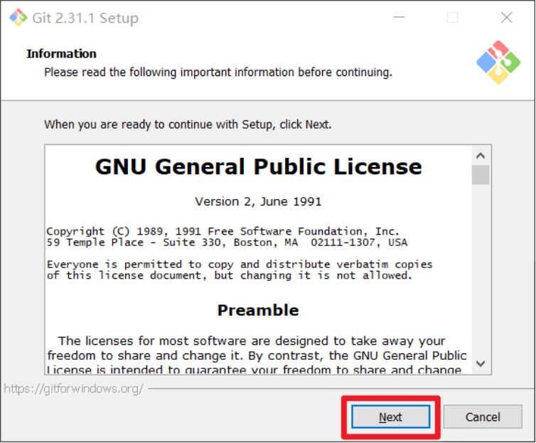
步骤 2：选择安装位置（建议非中文且无空格目录）
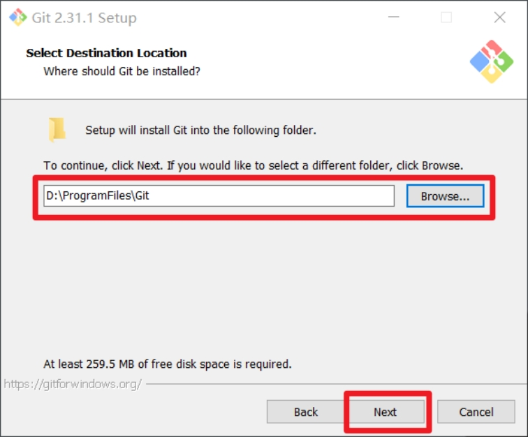
步骤 3：Git 选项配置保持默认
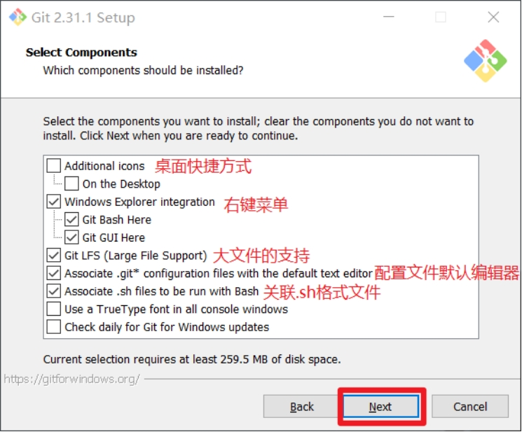
步骤 4：安装目录名保持默认
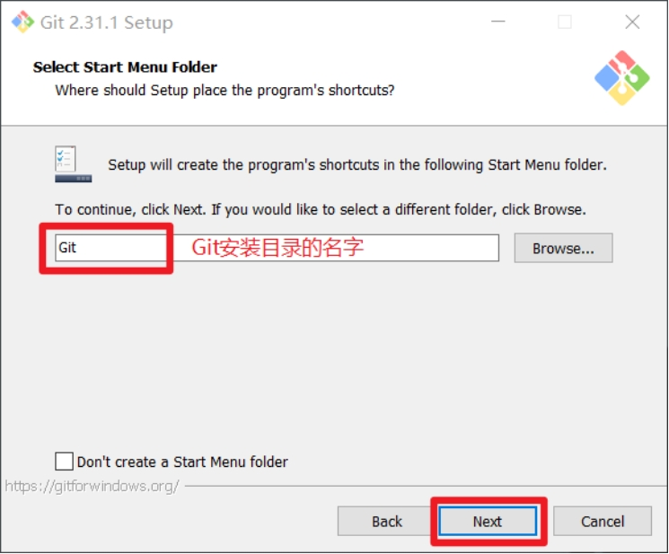
步骤 5：默认编辑器建议使用 Vim（默认值）
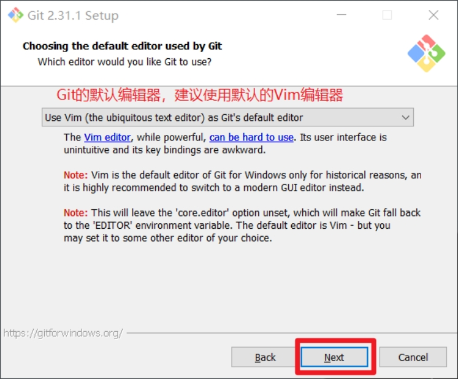
步骤 6：默认分支名设置保持默认（Let Git decide）
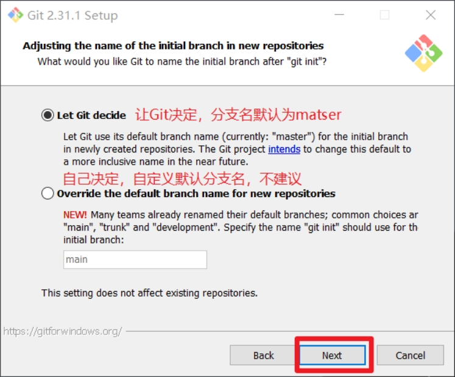
步骤 7：环境变量配置选择第一项（仅在 Git Bash 中使用 Git）
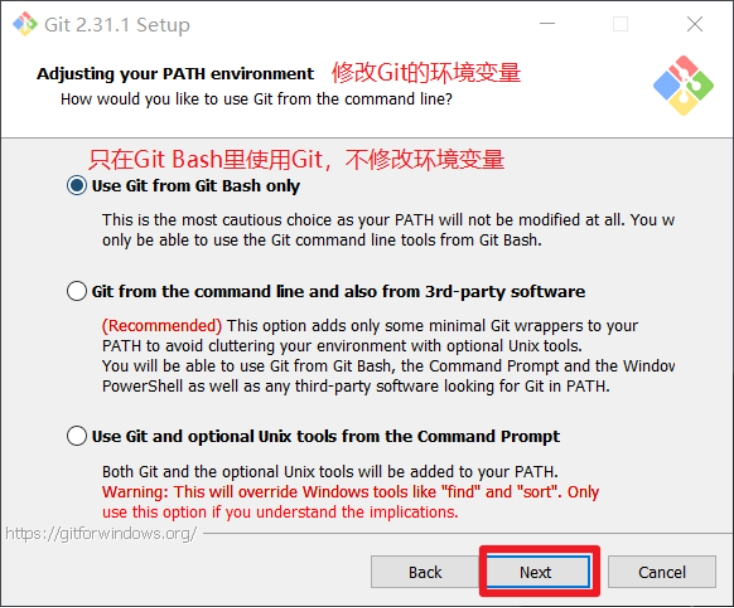
步骤 8：后台客户端连接协议使用默认 OpenSSL
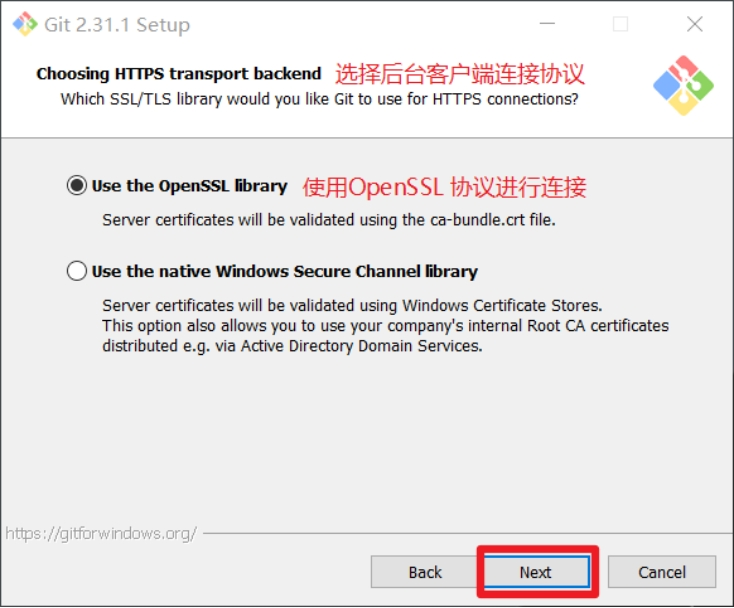
步骤 9：行尾换行符设置选择第一项（自动转换）
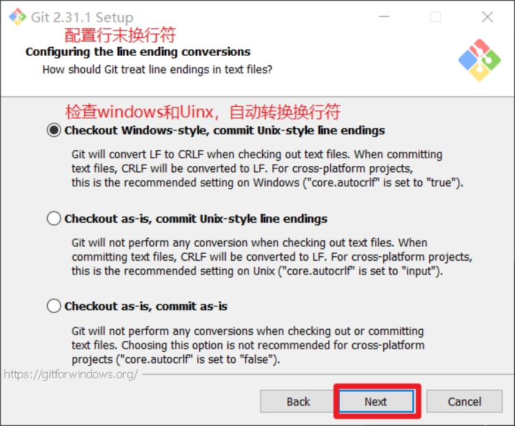
步骤 10：终端类型选择默认 Git Bash
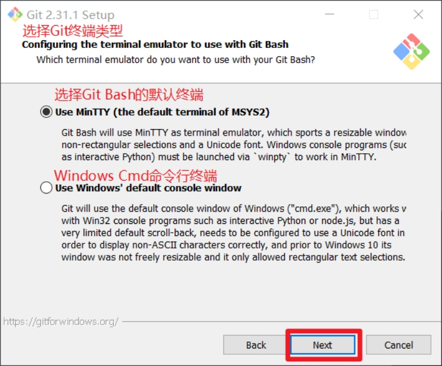
步骤 11：git pull 合并模式选择默认
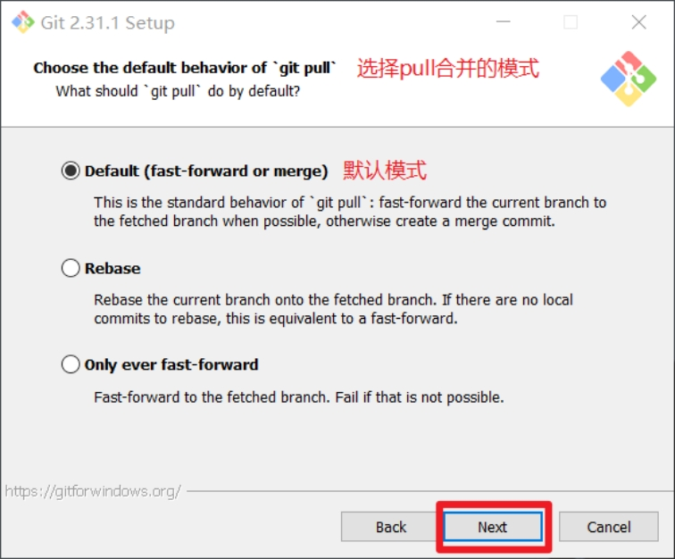
步骤 12：凭据管理器选择默认跨平台管理器
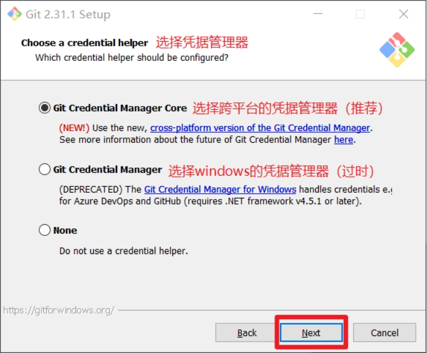
步骤 13：其他配置保持默认
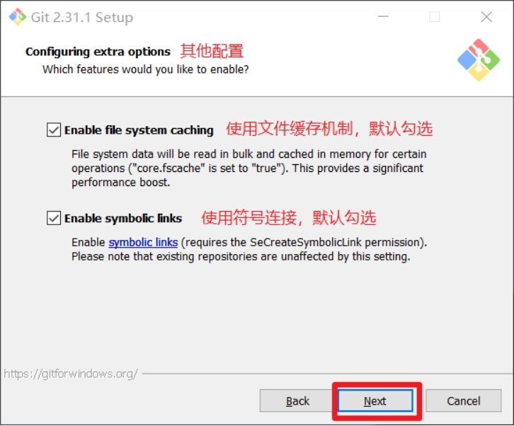
步骤 14：实验性功能不勾选，点击 Install
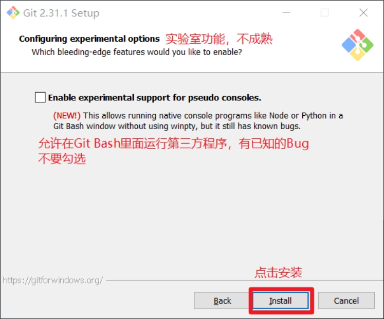
步骤 15：点击 Finish，完成安装
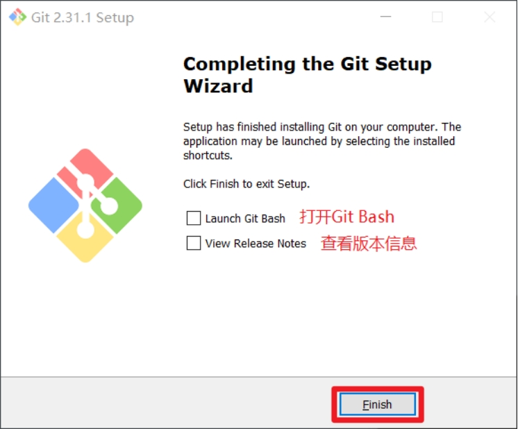
3.2 安装完成验证
- 在任意目录右键，选择
Git Bash Here打开终端。 - 执行
git --version，出现版本号即安装成功。
Git Bash Here 入口
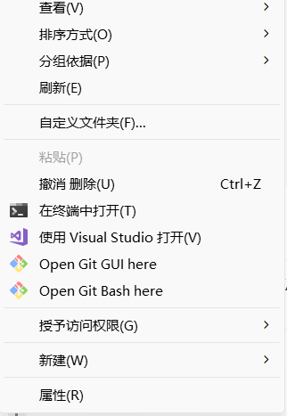
版本验证命令
git --versionGit 版本验证示例
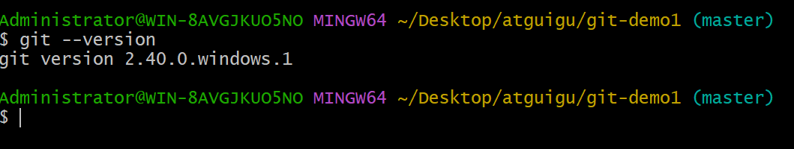
4. nvm 安装（可选）
如果当前时间紧张，可以先跳过 nvm，在 Django 最后一节课前补齐即可。
参考教程：nvm 安装教程（Windows）
简化结论：安装过程中基本保持默认，按提示下一步即可。
课前自检
确保以下命令都能在终端正常执行并输出版本号：
环境自检命令
uv --version
git --version